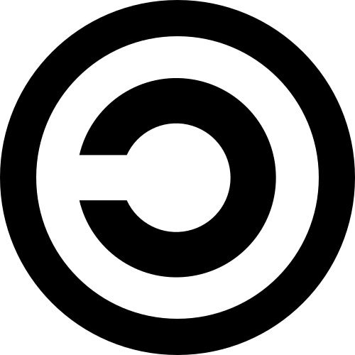
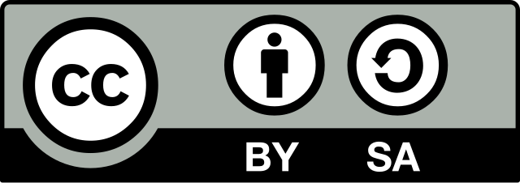
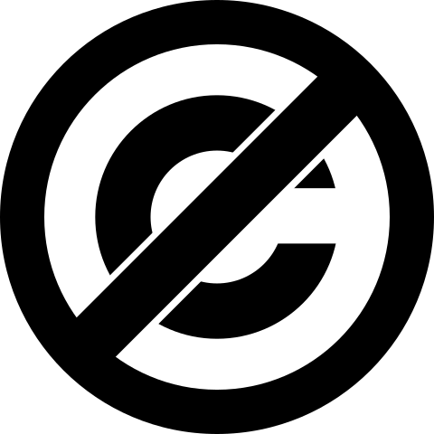

Copyright¶
The Copyright o Copyright <https://es.wikipedia.org/wiki/copyright>`__ és una ** llei ** que protegeix les obres ** creatives ** i que només l’autor decideix com s’utilitzen, copien, distribueixen, s’adapten o exhibeixen les seves obres.
Entre els treballs creatius protegits per copyright <https://www.cultura.gob.es/cultura/areas/propied ordinador, entre d’altres.
Els drets d’autor protegeixen les expressions creatives, però no les idees, fets, coneixements o conceptes generals. Per tant, una obra pot tractar amb un nen que descobreix que és un mag i assisteix a una escola de màgia sense violar cap copyright, ja que la protecció és la novel·la de Harry Potter, no el seu estil ni la seva idea general.
No totes les creacions estan protegides per ** Copyright (copyright) **. Per exemple, les ** invencions tècniques ** estan protegides per ** patents **, mentre que els logotips ** i marques comercials ** tenen altres formes de protecció legal.
Totes les obres estan protegides per ** Copyright ** des del moment en què es creen. Tot i que no és obligatori registrar -los, és recomanable fer -ho al Registre de Propietat Intel·lectual <https://www.cultura.gob.es/cultura/areas/propiedadintelecual/mc/rpi/inicio.html> __ per poder demostrar la autoria.
Tipus de drets¶
- Drets morals.
Aquests drets no es poden donar a d’altres ni es perden mai.
- Reconeixement de qui és l’autor de l’obra.
- Oposició a modificacions de l’obra que amenaça l’honor o la reputació de l’autor.
- Drets econòmics.
Aquests drets es poden produir mitjançant una llicència.
- Reproducció.
- Distribució.
- Traducció a altres idiomes.
- Adaptació o modificació del treball.
Assignació de drets¶
Un autor pot cedir a altres persones o empreses els seus drets de còpia, distribució o exposició d’una obra, per exemple a una editorial ** **, un registre ** ** o una xarxa social ** **. Això es fa mitjançant contractes on s’estableixen les condicions de la tasca.
Creant un compte en una xarxa social, acceptem un contracte de cessió ** ** pel qual les nostres fotos, textos o vídeos poden ser publicats i utilitzats per la plataforma, sovint amb molt poques limitacions.
També hi ha contractes estàndard anomenats ** Llicències gratuïtes **. Aquests permeten a un autor concedir a qualsevol persona interessada en la seva obra sense necessitat de sol·licitar l’autorització directa, afavorint la difusió i la creació de noves obres dels originals.
Copyleft¶
Les llicències ** COPYLEFT ** són un tipus de llicències gratuïtes que l’autor pot aplicar a la seva obra per permetre a altres persones utilitzar, copiar, distribuir o modificar. La condició principal és que qualsevol versió modificada o derivada s’ha de mantenir sota la llicència ** Same CopyleFT **, garantint que l’obra i els seus derivats es mantinguin lliures.
{kind=link}

Logotip de CopyleFt (algun copyright reservat).¶
Aquest tipus de llicències fomenten l’accés al coneixement, la difusió i la creació col·laborativa de la cultura, que explica la seva gran importància.
Alguns exemples de llicències de CopyleFT són la llicència Creative Commons BY-SA i la llicència de programari GPL.
Creative Commons by-s¶
L’organització sense ànim de lucre ** Creative Commons ** ha creat diverses llicències estàndard per a la transferència de drets per promoure la cultura lliure.
Una de les llicències més conegudes és la ** cc by-sa (component el reconeixement el mateix) **, utilitzat per ** wikipedia ** per difondre el seu contingut. Aquesta llicència us permet copiar, publicar i crear obres derivades, sempre que es reconegui el ** Autor original ** i que les obres resultants es publiquen amb la mateixa llicència CC BY-SA.
{kind=link}

Logotip de la llicència de compartició de reconeixement de Creative Commons.¶
Un estudiant pot afegir al costat del seu nom, en una obra escrita, dibuix o pòster, la frase:
** "sota la llicència cc by-sa 4.0 " **.
Ell dirà als altres que poden utilitzar la seva obra en les seves pròpies obres. Només han d’esmentar qui és l’autor ** original ** i compartir el que fan amb la ** mateixa llicència **.
Llicència GPL¶
La llicència ** GPL (llicència pública general) ** és una llicència destinada exclusivament al programari ** informàtic **. Per exemple, s'utilitza a ** Linux **, que és el nucli dels telèfons ** Android **.
Aquesta llicència permet utilitzar el programari lliurement, estudiar el seu funcionament, copiar -lo i modificar -lo. L’única condició imposada és que qualsevol modificació també es publiqui com a ** Open Source ** i sota la mateixa llicència GPL gratuïta, garantint que es mantingui lliure.
La idea principal de la llicència GPL és promoure ** col·laboració i transparència **. Aquesta llicència garanteix que el programari es manté gratuït, fins i tot quan altres persones la modifiquen o la milloren.
Domini públic¶
Quan han passat molts anys des de la mort de l’autor (en general 70), les seves obres es converteixen en ** domini públic **. Això significa que qualsevol pot copiar -lo, modificar -lo, publicar -lo o utilitzar -lo lliurement sense demanar permís.
{kind=link}

Logotip de domini públic (sense drets d'autor).¶
L’autor també pot decidir donar la seva obra al domini públic ** en qualsevol moment **, de manera que tothom pugui utilitzar -lo lliurement sense demanar permís.
Exercicis¶
- Què és el copyright o ** copyright **? Heu creat alguna vegada una obra que tingui l’autor? Expliqueu breument.
- Quins drets té un ** autor ** sobre la seva obra només per crear -lo?
- Des de quan es protegeix una obra per copyright?
- Quina diferència hi ha entre drets d’autor i patent?
- Quines obres estan protegides per copyright? Escriviu 5 exemples.
- Anomeneu tres idees, fets o conceptes que ** no ** estan protegits pels drets d’autor.
- Què significa donar els drets d’una obra a una xarxa social ** **?
- Escriviu dos tipus d’obres que no estan protegides pels drets d’autor. Estableix un exemple de cadascun.
- Escriviu amb les vostres paraules què és CopyleFt.
- Escriviu dos exemples de llicències de CopyleFT.
- Per què creieu que les llicències ** Creative Commons ** fomenten la difusió i la creació culturals? Escriviu un exemple pràctic del seu ús.
- Què és una llicència ** GPL **? Escriviu un exemple per utilitzar aquesta llicència.
- Què vol dir que una obra es troba en domini públic ** **?
- Dóna un exemple de treball clàssic ** ** que es troba en el domini públic.
- Quan passa un domini públic?
- Dibuixa els logotips ** ** de copyright, copyleft i domini públic.
- Investigueu quin és l’acord de Berna per a la protecció d’obres i escrit a mà un breu treball de full a banda i banda.
Recursos¶
Format DIN A4 amb unitat i exercicis:
: Descarregueu: `Copyright. Format PDF. <Recursos/copyright/copyright.pdf> `
: Descarregueu: Copyright. Format DOC. <Recursos/Copyright/Copyright.doc>
Enllaços per ampliar el coneixement:
- Guia pràctica per a llicències útils per a professors <https://descargas.intef.es/cedec/proytoedia/guias/contenidos/guiadelizencias/> __.
- Copyright i llicències <https://formacion.intef.es/aulaenabierto/mod/book/tool/print/index.php?id=4360> __.
- Copyright on Wikipedia <https://es.wikipedia.org/wiki/copyright> `` `